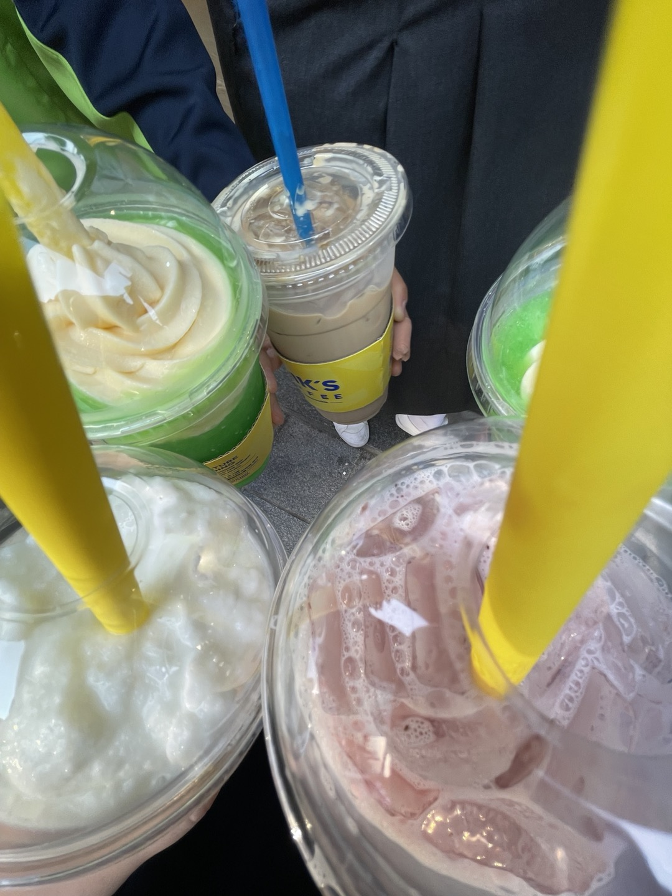

gallery
지원폼
Q&A

1/3
메가커피 마셨던 날
1기와 2기 모두 함께 메가 커피를 마셨던 그날, 정말 즐거운 시간이었어! 선후배들이 한자리에 모여 편하게 이야기 나누고 웃음을 나누는 순간들이 정말 소중했어.
특히 모두 함께 커피를 마시며 얘기하니 더 친밀해지고 서로에 대해 더 많이 알게 된 것 같아. 앞으로도 이런 시간이 자주 있었으면 좋겠어! 😊